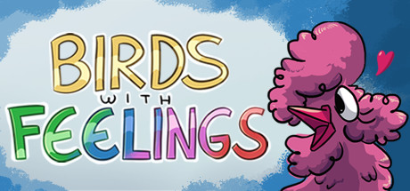
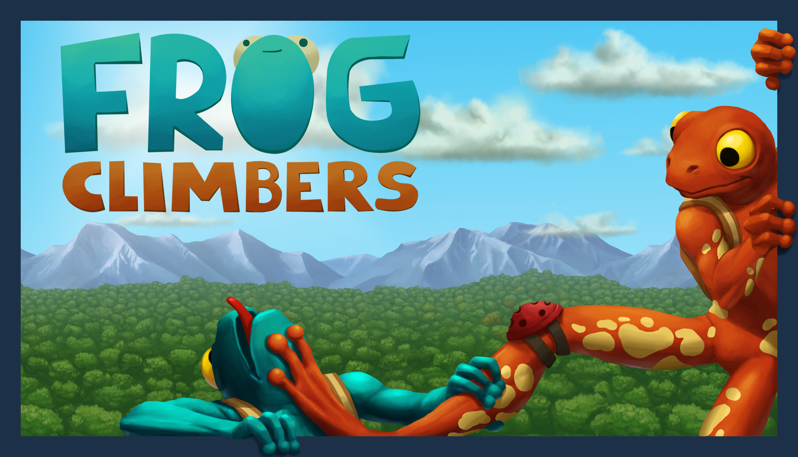

Drillbird
March 2025
Platforms: PC & Mac
Team: Developed by myself with contributions from colleagues with art and music.
Genre: Digging/Platforming Adventure
Role: Game Designer, Programmer, Artist
Itch.io page
Drillbird is a ~2h long digging platformer developed over three months after the studio I previously worked on closed down.
Find more info at the game page
Psst! While drillbird won't release until Friday 28.03.2025 - the game is finished and can be played by clicking this link, and using "drillbird_is_the_word" as the password
Unannounced Console SteamWorld game
2022-2024
Platforms: Consoles, PC
Team: Thunderful Malmö - Thunderful Games
Genre: hush hush
Role: Game Designer, then Lead Game Designer, finally Game Director
Birds with Feelings
2022
Platforms: Steam
Team: Bird Pals SIA - 2 core members, 6 contributors in total
Genre: Turn Based Strategy
Role: Game Design, Art
Steampage link
Unannounced Mobile Steamworld game
2020-2022
Platforms: Mobile
Team: Thunderful Malmö - Thunderful Games
Publisher: N/A
Genre: hush hush
Role: Game Designer, Narrative Designer
Little Nightmares 2
2018-2020
Platforms: PC, PS4, Xbox, Nintendo Switch
Team: Tarsier Studios
Publisher: Bandai Namco
Genre: Atmospheric Puzzle Platformer
Steampage
Role: Level Designer
Frog Climbers
2016
Platforms: Steam
Team: TeamCrew - 4 person team formed specifically to finish Frog Climbers, which started as a student project
Publisher: Dear Villagers
Genre: Party Game
Game Page
Role: All Game Design & Level Design
LittleBigPlanet Vita
2012
Platforms: Playstation Vita
Team: Tarsier Studios
Publisher: SONY Entertainment
Genre: Platformer
Wikipedia page
Role: Level Design Intern